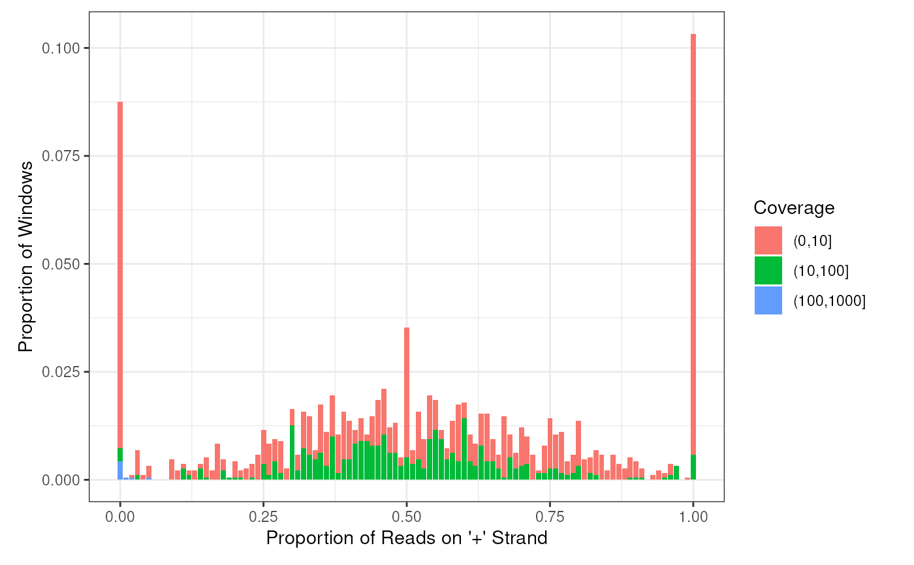
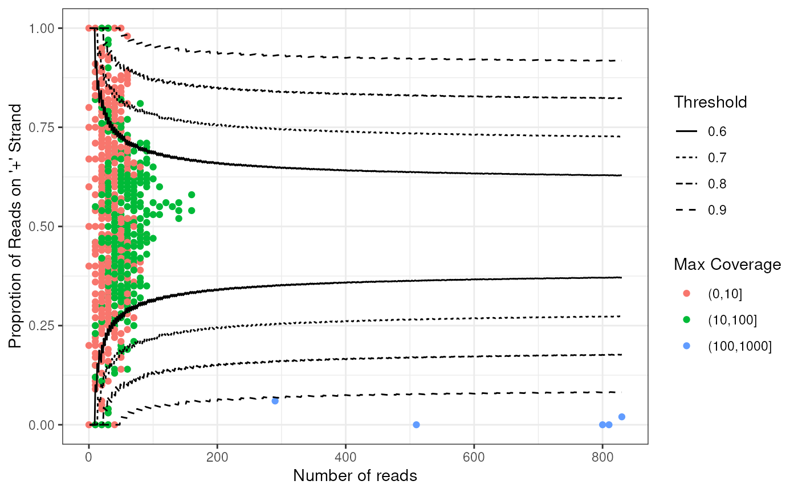

Intersect the windows data frame with an annotation data frame
Source:R/intersectWithFeature.R
intersectWithFeature.RdIntersect the windows with an annotation data frame to get features that overlap with each window
Usage
intersectWithFeature(
windows,
annotation,
getFeatureInfo = FALSE,
overlapCol = "OverlapFeature",
mcolsAnnot,
collapse,
...
)Arguments
- windows
data frame containing the strand information of the sliding windows. Windows can be obtained using the function
getStrandFromBamFile.- annotation
a Grange object that you want to intersect with your windows. It can have mcols which contains the information or features that could be able to integrate to the input windows
- getFeatureInfo
whether to get the information of features in the mcols of annotation data or not. If FALSE the return windows will have an additional column indicating whether a window overlaps with any range of the annotion data. If TRUE the return windows will contain the information of features that overlap each window
- overlapCol
the columnn name of the return windows indicating whether a window overlaps with any range of the annotion data.
- mcolsAnnot
the column names of the mcols of the annotation data that you want to get information
- collapse
character which is used collapse multiple features that overlap with a same window into a string. If missing then we don't collapse them.
- ...
used to pass parameters to GenomicRanges::findOverlaps
Examples
bamfilein = system.file('extdata','s2.sorted.bam',package = 'strandCheckR')
windows <- getStrandFromBamFile(file = bamfilein)
#> Testing paired end by checking the first 1e+05 reads of file /__w/_temp/Library/strandCheckR/extdata/s2.sorted.bam
#> Your bam file is single end
#> Reading file /__w/_temp/Library/strandCheckR/extdata/s2.sorted.bam
#> Read sequences 10
#add chr before chromosome names to be consistent with the annotation
windows$Seq <- paste0('chr',windows$Seq)
library(TxDb.Hsapiens.UCSC.hg38.knownGene)
#> Loading required package: GenomicFeatures
#> Loading required package: AnnotationDbi
#> Loading required package: Biobase
#> Welcome to Bioconductor
#>
#> Vignettes contain introductory material; view with
#> 'browseVignettes()'. To cite Bioconductor, see
#> 'citation("Biobase")', and for packages 'citation("pkgname")'.
annot <- transcripts(TxDb.Hsapiens.UCSC.hg38.knownGene)
# get the transcript names that overlap with each window
windows <- intersectWithFeature(windows,annot,mcolsAnnot='tx_name')
# just want to know whether there's any transcript that
# overlaps with each window
windows <- intersectWithFeature(windows,annot,overlapCol='OverlapTranscript')
plotHist(windows,facets = 'OverlapTranscript')

plotWin(windows,facets = 'OverlapTranscript')
#> Warning: Removed 1 row containing missing values or values outside the scale range
#> (`geom_point()`).
